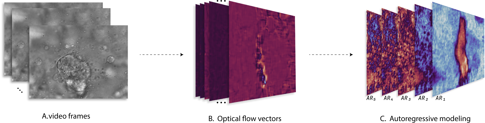
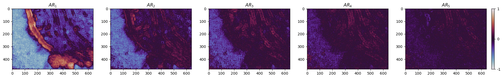
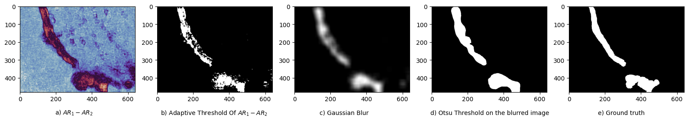

Training a Supervised Cilia Segmentation Model from Self-Supervision
Seyed Alireza Vaezi, Shannon Quinn
University of Georgia
Manual Labeling of Cilia


Manual labeling of cilia.
Cilia are hair-like structures on the surface of cells that play crucial roles in cellular processes, such as moving fluids and sensory functions. Dysfunction in ciliary motion, known as ciliopathies, can lead to serious health issues including blindness and neurodevelopmental defects. Accurate analysis of ciliary motion is essential for diagnosing these conditions but is traditionally labor-intensive, subjective, expert-intensive, and prone to error due to the manual labeling of cilia. Our approach leverages optical flow and semi-supervised learning to automate the segmentation and analysis of cilia, providing a more efficient and accurate method for studying ciliary behavior.
Methodology
Ciliary motion can be considered as dynamic textures for their orderly rhythmic beating. Taking advantage of this, OF can be used to compute the flow vectors of videos of cilia.
Optical Flow (OF) and Autoregressive (AR) Modeling
Autoregressive parameterization of the OF property of the video yields a manifold that quantifies the characteristic motion in the cilia.
We generate a 5-order AR model of the OF component.
Generating masks from the autoregressive model
The low dimension of this manifold contains the majority of variations within the data, which can then be used to segment the motile ciliary regions.
Training a Model
Training the Deep Learning Model
To train our deep learning model, we utilize a Feature Pyramid Network (FPN) architecture. The training dataset consists of the first 250 frames of the control videos and the pseudolabels generated from the autoregressive model. We apply data augmentation including resizing, random cropping, and rotation to enhance the robustness of the model.
| Aspect | Details |
|---|---|
| Architecture | FPN with ResNet-34 encoder |
| Input | Grayscale images with a single input channel |
| Number of Epochs | 20 |
| Batch Size | 4 |
| Training Samples | 15,662 |
| Validation Samples | 2,763 |
| Test Samples | 108 |
| Loss Function | Binary Cross-Entropy Loss |
| Optimizer | Adam optimizer with a learning rate of $10^{-3}$ |
| Evaluation Metric | Dice score during training and validation |
| Data Augmentation Techniques | Resizing, random cropping, and rotation |
| Implementation | Using a Python library with Neural Networks for Image Segmentation based on PyTorch [@Iakubovskii:2019] |
| Phases | Metrics | |||
|---|---|---|---|---|
| IoU over dataset | Dice Score | Sensitivity | Specificity | |
| Validation | 0.312 | 0.476 | 0.999 | 0.813 |
| Testing | 0.230 | 0.374 | 0.631 | 0.787 |
These results show the potential of our approach to reduce the reliance on manually labeled data for cilia segmentation. The use of this unsupervised learning framework allows the model to generalize from the motile cilia domain to the more variable dyskinetic cilia, although with some limitations in accuracy.